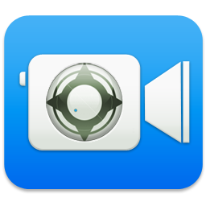
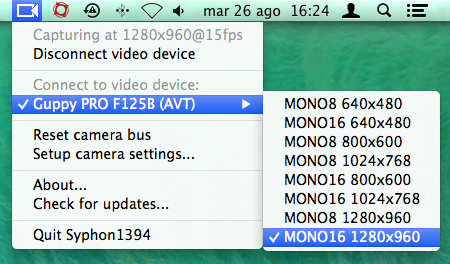

Tweak your firewire camera settings and create a Syphon video stream
Tweak all the settings your firewire camera is capable of, open a connection and create a Syphon video stream out of it.
Apple's automagics are great most of the time but sometimes you need control over your camera's exposure or gain settings.
Syphon1394 has been tested and used in production only on an AVT Guppy PRO F125B. It should work on any Firewire IIDC 1394 camera, but don't blame on me if it doesn't. If you test it on other cameras please let me know.
Currently only RGB8, MONO8, MONO16, YUV422 video modes are supported. If you need support for some other video modes or for Format7 get in touch.

Andrea Cremaschi
Syphon1394 source code is available under the MIT license. See the LICENSE file for more info.
Syphon source code is available under a Simplified BSD software license.
libdc1394 is available under the LGPL2.1 license.